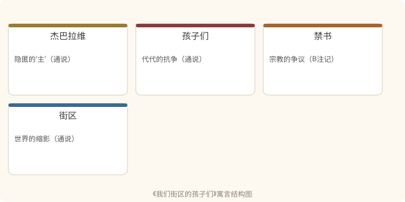

我们街区的孩子们
一、基本信息
| 作者 | 马哈福兹 |
|---|---|
| 成书/出版 | 1959年（作者页注记：Britannica——我们街区的孩子们 (1959，被禁)——'banned in Egypt for its religious themes'） Naguib Mahfouz — Encyclopaedia Britannica（百科全书） |
| 国别/地区 | 埃及 |
| 时代 | 近代 · 20世纪50年代末 |
| 体裁 | 长篇小说 |
| 语言 | 阿拉伯语 |

《我们街区的孩子们》寓言结构图（主题·结构图）
二、创作背景
作者页注记：我们街区的孩子们——'（Britannica：banned in Egypt for its religious themes）'。
Britannica：马哈福兹——1988诺奖（作者页交叉——待核）。
题材（通说待核）：小街巷的'群主'寓言——先知们的轮回与'杰巴拉维'。
三、内容脉络
（通说待核）代代'孩子'争取街区的权利。
（通说待核）'杰巴拉维'的隐匿与诸子的牺牲。
四、主要人物表
| 人物 | 身份 | 说明 |
|---|---|---|
| 杰巴拉维 | 街区之主 | （通说待核） |
| 诸子（加巴拉等） | 先知化身 | （通说待核） |
五、主题与艺术特点
- 宗教寓言的争议（B注记：banned...religious themes）。
- 权力与分配的轮回（通说待核）。
- '1988诺奖'（作者页交叉——待核）。
六、影响与评论
- Britannica：'banned in Egypt for its religious themes'（作者页注记）。
Naguib Mahfouz — Encyclopaedia Britannica（百科全书） - Britannica：马哈福兹'开罗三部曲'（作者页交叉）。
Naguib Mahfouz — Encyclopaedia Britannica（百科全书）
七、阅读建议
难点
- 寓言与宗教的边界。
- 先知谱系的对应（通说待核）。
- 《我们街区的孩子们》中译本（人民文学/上海译文等——通说待核）。
- 阿拉伯文原版。
马哈福兹寓言篇；与'开罗三部曲'对读。
八、待核实
- 杰巴拉维等人名核对（通说）。
- 1959年连载（Al-Ahram说）与禁书细节待核。
- '诺奖1988'交叉核对。